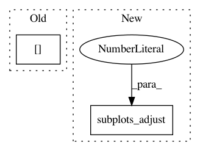

d632a61fc84c50fedc9706466fd26bc1e544d46e,gen_util.py,,display_visual_eval_images,#Any#Any#Any#,395
Before Change
n_examples = signal.shape[0]
// print("Displaying chunk slices for", n_examples, "examples")
source_list = [signal, target, prediction]
z_mid = signal.shape[2]//2
print("dna stats:")
print_array_stats()
print("predition stats:")
After Change
for ex in range(n_examples):
// fig = plt.figure(figsize=(15, 15), tight_layout={"w_pad":1.0})
fig = plt.figure(figsize=(15, 15))
fig.subplots_adjust(wspace=0.05)
z_strong = find_z_of_max_slice(target[ex, 0, ])
print("z:", z_strong)
for i in range(3):
img = source_list[i][ex, 0, z_strong, ]
In pattern: SUPERPATTERN
Frequency: 4
Non-data size: 2
Instances
Project Name: AllenCellModeling/pytorch_fnet
Commit Name: d632a61fc84c50fedc9706466fd26bc1e544d46e
Time: 2017-06-30
Author: chek.o@outlook.com
File Name: gen_util.py
Class Name:
Method Name: display_visual_eval_images
Project Name: matplotlib/matplotlib
Commit Name: 354fa7de1d2babc7f84a816f568326eb2b021cf6
Time: 2018-06-14
Author: elch.rz@ruetz-online.de
File Name: examples/lines_bars_and_markers/marker_reference.py
Class Name:
Method Name:
Project Name: rflamary/POT
Commit Name: 95b2a584d02da1a08e71f7ff3895d958e42ed2dc
Time: 2017-07-20
Author: alexandre.gramfort@m4x.org
File Name: ot/plot.py
Class Name:
Method Name: plot1D_mat
Project Name: nilearn/nilearn
Commit Name: 59442085239832e1e622d1ff390746666391c572
Time: 2016-03-02
Author: moritz.boos@gmail.com
File Name: examples/02_decoding/plot_miyawaki_encoding.py
Class Name:
Method Name: